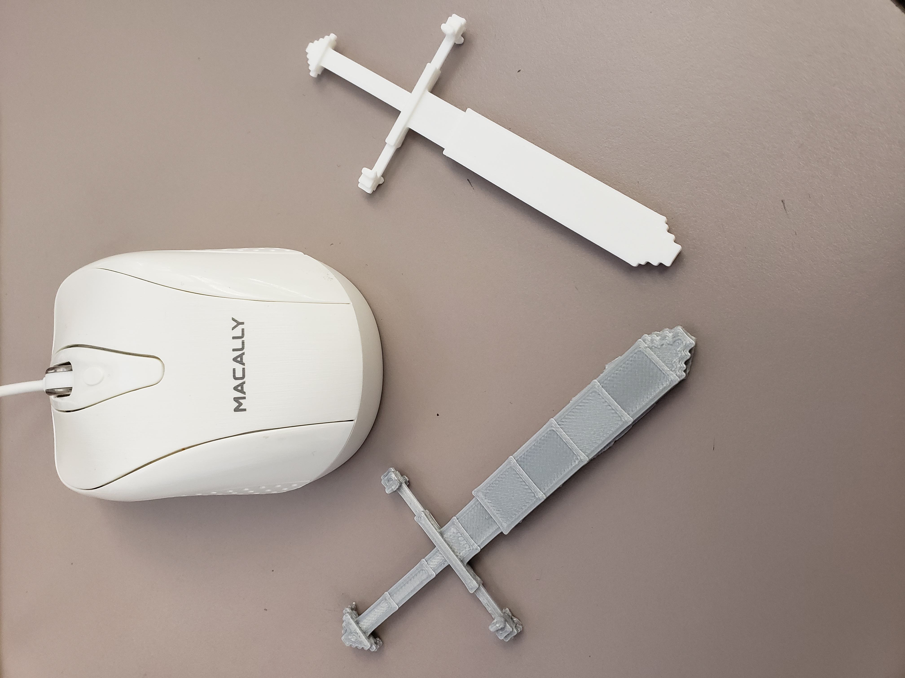

<p> ​After building the sword in minecraft, I used the software mineways to extract the object from the game to later put it in file to 3-D print. The left sword was the first one I printed. I little bit detailed but scruffy in some areas. The right one was the final one I printed which came out much more cleaner after adjusting the settings on the 3-D printer program. </p>